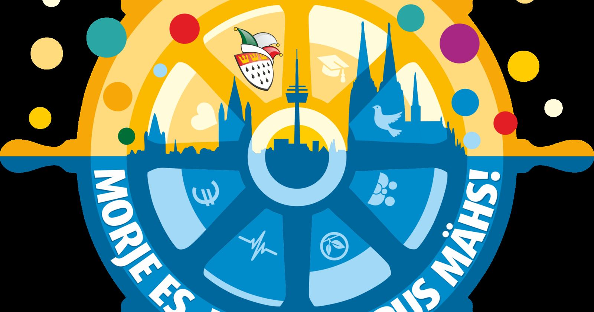

Festivals · Culture
Cologne Carnival 2027
- Dates
- Location
- Cologne, Germany
- Format
- In-person
- Category
- Culture
- Industry
- Culture
- Organiser
- Festkomitee Kölner Karneval
- Official website
- https://www.koelnerkarneval.de/
About
Official 2027 dates were not clearly published on the official pages fetched on 23 Nov 2026. Included with status dates TBA; dates left blank. Dates are local to the host city (Central European Time, UTC+1 / UTC+2 in summer).
Topics: carnival.
No organiser attendance figure found on the official pages fetched 24 Nov 2026. Ranked by our estimated size tier 'very large' (100,000+ attendees/visits), a judgement from format, venue and scale, not an official number.